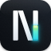
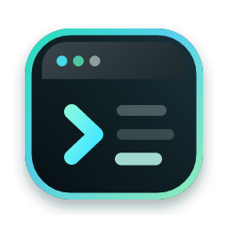
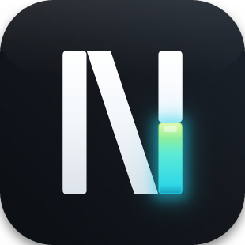
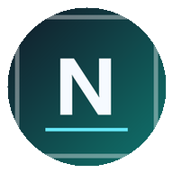
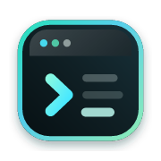

几何等宽笔画 N · 右柱演化为发光 cyan 光标方块。N 是「Next」，光标是「Terminal」——两个基因合而为一。



深色背景表现最佳（光标发光充分）。浅色背景与品牌渐变下，光标的青绿色依然清晰可辨。
macOS 系统圆角处理（≈18%）叠加在设计圆角（22%）之上，dock 中辨识度极高。
Windows 在 16/24/32 三种任务栏尺寸下都清晰。cyan 光标方块是唯一颜色锚点。

Android adaptive icon：背景色 #0A0D12 + 前景 mark。系统蒙版（圆形/水滴/圆角矩形）裁剪后，mark 仍在 66dp 安全区内。

iOS 系统圆角（22.37%）+ drop shadow 处理后，与 Apple 原生应用图标视觉一致。
浏览器标签页 16×16 favicon。三段式 N + 异色光标，缩到极限仍可识别。
系统通知、托盘、任务栏浮窗的典型尺寸（24-48px）。

Android 13+ Themed Icons API 用法。仅保留几何，去掉渐变/发光/阴影，依靠 launcher 主题色（系统级 Material You 派生色）着色。
| 画布 | 1024 × 1024 |
| 圆角 | rx=224 (≈22%) |
| 背景渐变 | #0A0D12 → #161D26 对角 |
| N 笔宽 | 100 px |
| N 高度 | 600 px (212–812) |
| N 颜色 | #F4F8FB terminal white |
| 光标位置 | 右柱下半 (662,512)–(762,812) |
| 光标渐变 | #BEF264 → #5EEAD4 → #22D3EE |
| 外发光 | 2 层 Gaussian blur (22 + 48) |
| 安全边距 | ≥ 12.5% (128 px) |
| 小尺寸策略 | ≥ 16 px 保留三段式 N |
src-tauri/app-icon.svg · 主图标 1024×1024src-tauri/app-icon-fg.svg · Android foreground 108dpsrc-tauri/app-icon-bg.svg · Android 背景 108dpsrc-tauri/app-icon-monochrome.svg · Android 13+ 单色src-tauri/app-icon-manifest.json · tauri icon 清单icons/icon.{png,ico,icns} · 主图标 三平台icons/32,64,128,128@2x.png · Tauri bundleicons/Square*.png · Windows Store ×9icons/android/mipmap-*/ · Android ×25icons/ios/AppIcon-*.png · iOS ×18tauri.conf.json · windows[0].icon → 运行时窗口图标icons/android/values/ic_launcher_background.xml · #fff → #0A0D12package.json · icon:regen / icon:regen:verbosepnpm icon:regen
改 SVG → 跑这条命令 → 整套装自动重新生成。

深色背景用浅色文字，浅色背景用深色文字——单一资产适配任何上下文。光标渐变（cyan/lime）独立保持，永远是品牌色彩销点。
同一 mark 3 种背景。动画呼吸节奏不受背景影响。